Investigación y Desarrollo de Solvers Híbridos APIC e IPIC para Preservación de Vorticidad y Láminas Líquidas
Este proyecto de fin de máster aborda las limitaciones históricas de los métodos Particle-In-Cell en la industria cinematográfica y de efectos visuales (VFX): la pérdida severa de energía cinética y momento angular por difusión numérica en el PIC clásico, frente al ruido de alta frecuencia y caoticidad de partículas que presenta FLIP. Se investigaron, formularon matemáticamente e implementaron en SideFX Houdini dos metodologías de vanguardia: APIC (Affine Particle-In-Cell) e IPIC (Impulse Particle-In-Cell), integrándolas dentro de un pipeline procedural con nodos customizados, grillas dispersas OpenVDB y renderizado PBR.
1. Marco Teórico y Arquitectura de los 4 Solvers Estudiados
El flujo de trabajo acopla partículas Lagrangianas libres (que transportan masa y momento con conservación estricta) con una grilla cartesiana Euleriana escalonada (MAC grid) donde se proyecta la presión incompresible libre de divergencia (∇ · u = 0).
Interpola directamente las velocidades de la rejilla a las partículas tras cada paso de presión. Extremadamente estable y libre de ruido caótico, pero introduce una excesiva difusión numérica que actúa como una viscosidad artificial brutal, disipando rápidamente vórtices y turbulencias.
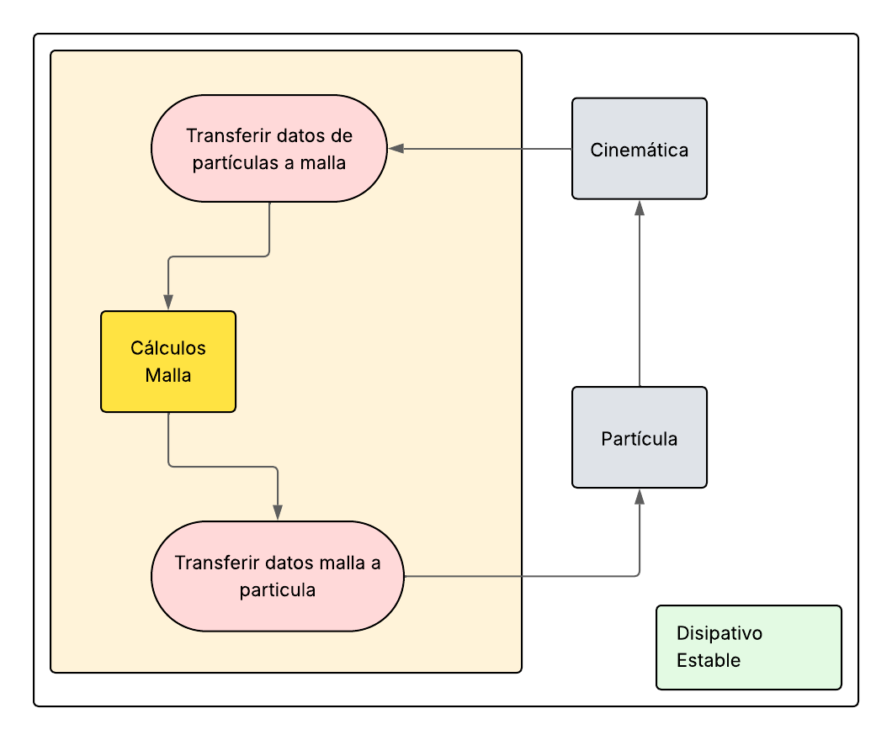
Transfiere únicamente los cambios (Δu) de velocidad calculados en la rejilla hacia las partículas. Preserva con gran viveza la energía cinética y las salpicaduras, pero sufre de inestabilidad intrínseca, ruidos parásitos de rejilla y formación descontrolada de agregados.
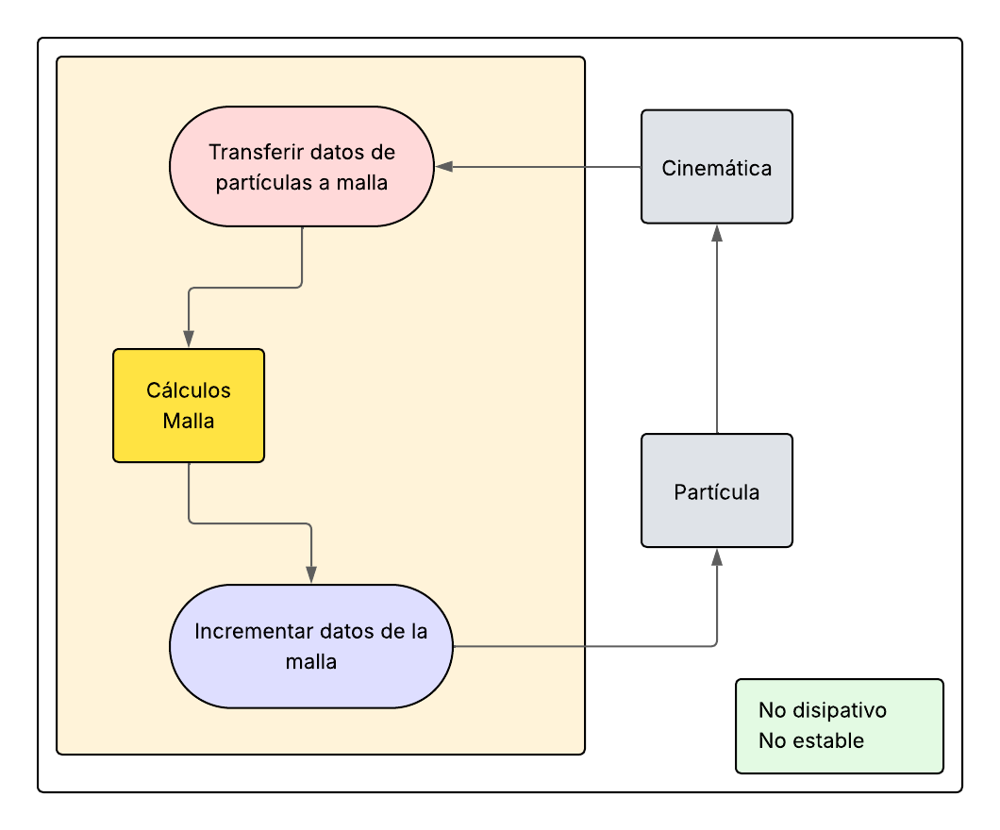
Almacena en cada partícula un tensor de velocidad afín Bp que representa localmente la rotación, cizalladura y deformación. Garantiza la conservación exacta del momento angular y la vorticidad entre partícula y rejilla sin añadir disipación artificial ni generar ruido numérico.
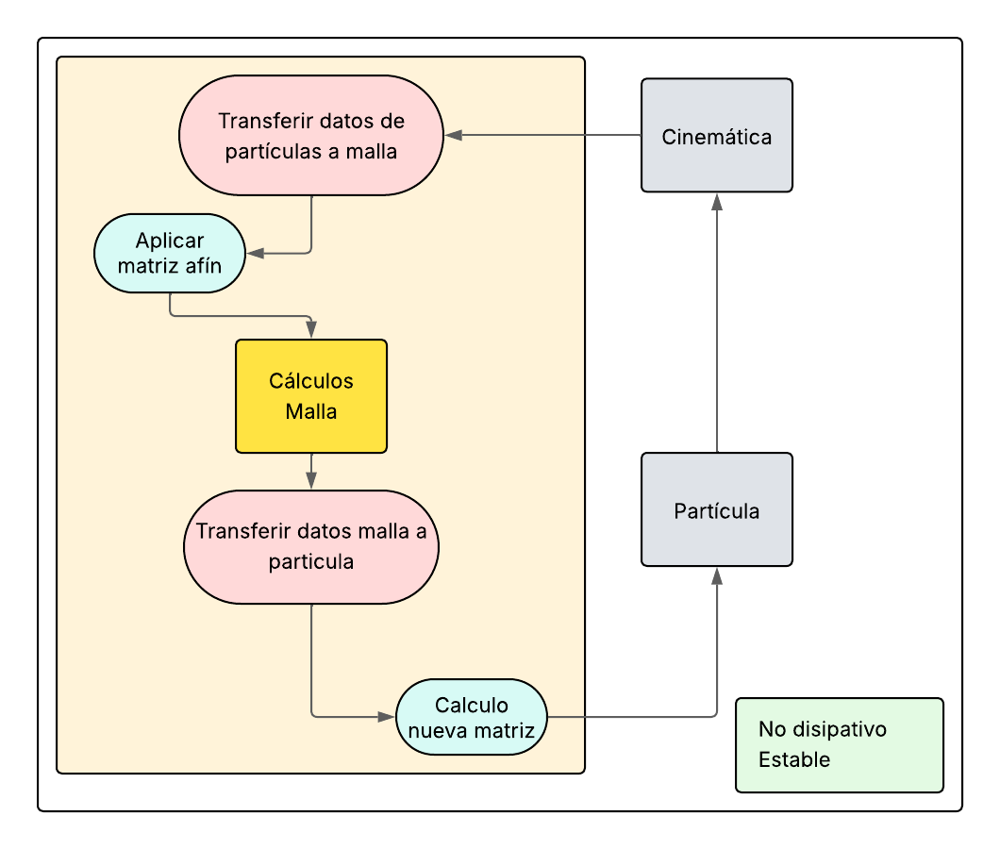
Sustituye la velocidad por la variable de impulso m conectada con potenciales de Clebsch y mapas de flujo inversos. Al proyectar el impulso sin tocar la vorticidad intrínseca, logra mantener láminas de fluido hiperdelgadas (thin sheets) y vórtices a escala sub-rejilla que ningún otro solver puede retener.
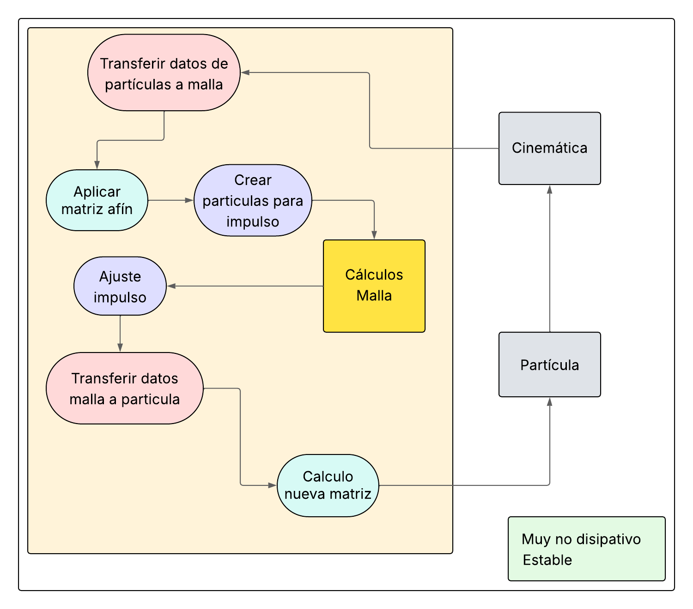
2. Benchmark de Impacto y Salpicadura: Colisión contra Geometría Compleja (Dinosaurio)
Prueba de estrés computacional con una columna masiva de fluido impactando a alta velocidad sobre un modelo anatómico de dinosaurio con cavidades y bordes afilados. Comparativa directa a resolución completa entre el solver APIC e IPIC en los instantes clave de dispersión y turbulencia:
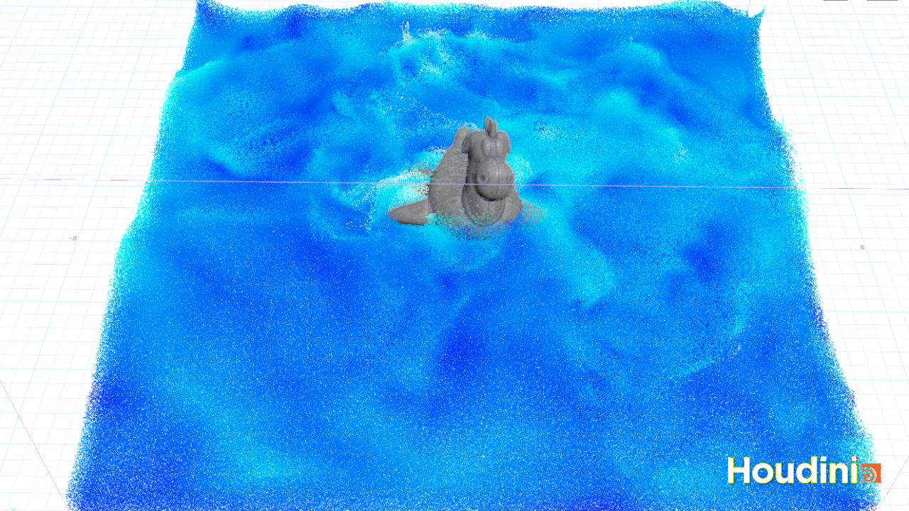
El fluido envuelve suavemente las protuberancias de la geometría. La matriz afín preserva el momento angular del choque, evitando pérdidas numéricas y manteniendo un frente de onda homogéneo sin dispersión espuria.
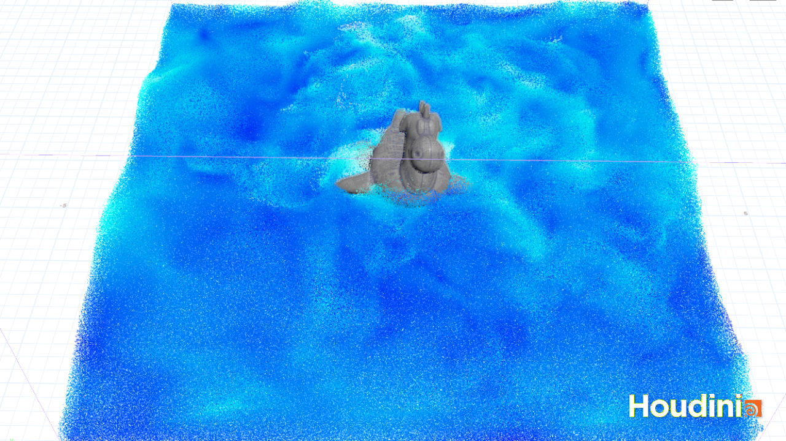
Gracias a la formulación por impulso libre de disipación, las láminas de fluido que se desprenden de la cabeza y lomo se mantienen tensas y cohesionadas en el aire durante mucho más tiempo antes de granularse.
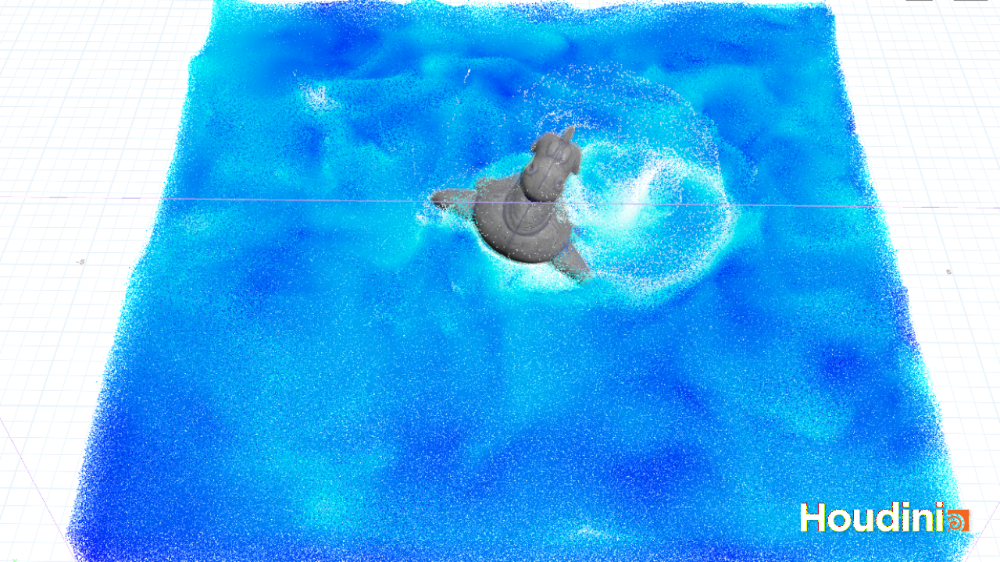
El fluido sedimenta en la base del dominio formando ondas concéntricas sin presentar el efecto hervidero (boiling) característico de FLIP. Excelente estabilidad para tomas de producción VFX continuadas.
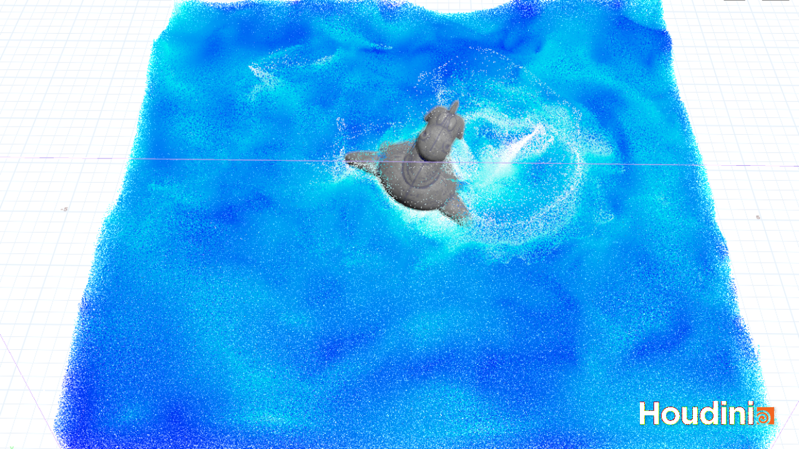
Muestra una dinámica mucho más viva y turbulenta a largo plazo: los remolinos y las microestructuras vorticiales desprendidas durante el impacto siguen rotando activamente tras 500 frames sin decaimiento numérico artificial.
3. Comparativa de Reconstrucción de Superficie y Ruido Numérico
Evaluación morfológica de la superficie libre reconstruida (Level-Set con OpenVDB) a frame 500 bajo idénticas condiciones iniciales y mismo conteo de partículas entre los solvers evaluados:
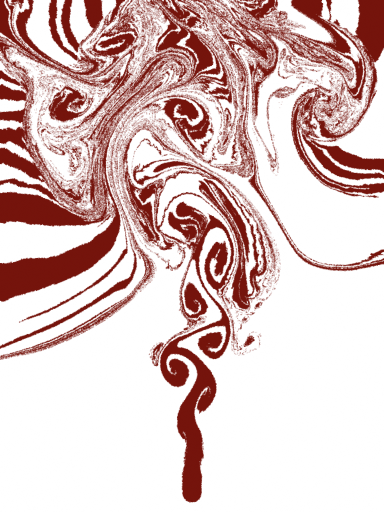
Genera una alta dispersión caótica de gotas aisladas y un oleaje rugoso con artefactos de rejilla visibles en la superficie del líquido.
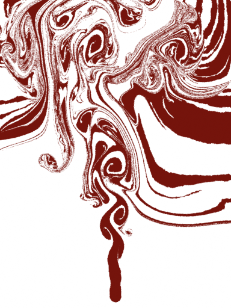
Superficie perfectamente limpia y continua. Las gotas se mantienen unidas por tensión sin ruido numérico y el oleaje fluye armónicamente.
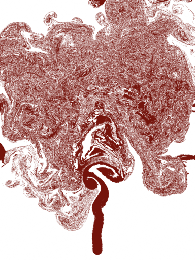
Retiene crestas afiladas, filamentos finos y un mapa de salpicaduras tridimensional hiperdetallado, ideal para tomas cinematográficas épicas.
4. Integración en el Pipeline de SideFX Houdini: Custom HDK / VEX
El solver no se limitó a un prototipo matemático abstracto: se desarrolló como una herramienta de producción totalmente integrada en SideFX Houdini a través de la arquitectura de operadores dinámicos (DOP Network) y la API C++ de Houdini (HDK):
Panel de Parámetros Ajustables del Solver
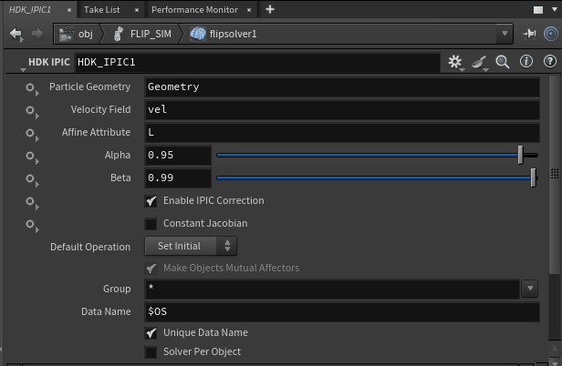
Interfaz procedural para artistas técnicos que permite conmutar en tiempo real entre los solvers PIC, FLIP, APIC e IPIC, configurar el orden del integrador temporal Runge-Kutta (RK2/RK4), limitar la condición CFL y modular el factor de mezcla afín.
Arquitectura de Nodos y Estructura DOP
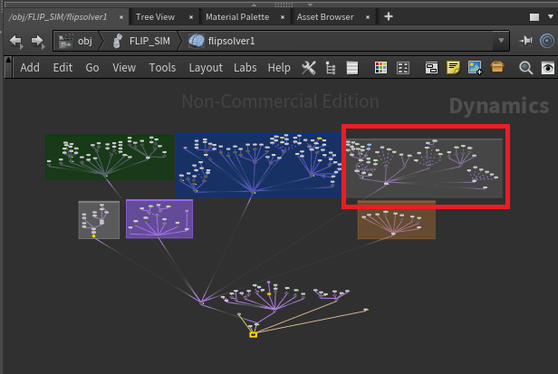
Inyección modular dentro de la subred del solver de fluidos, conectando las etapas de transferencia de momento (Particle-to-Grid), resolución de Poisson de presión con fronteras cerradas y actualización de posiciones (Grid-to-Particle).